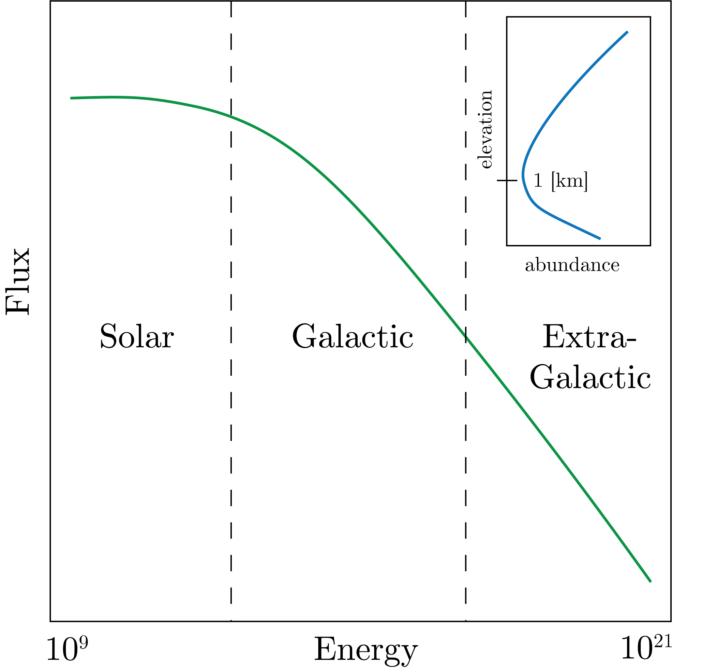

Cosmogenic nuclides form from the interaction of nuclei and cosmic rays.
Cosmic rays are rays that come from space and decline in abundance from the top of the atmosphere to about 1 [km], and then increase to the surface of the ocean, as shown in Fig. 1.
We show this in Fig. 1.

Fig. 1: The flux of cosmic rays at the top of the atmosphere, with the inset plot being the abundance from the top of the atmosphere to the surface elevation.
The make up of rays at the top of the atmosphere are the so-called primary particles:
$p \sim 83\%$
$\alpha \sim 13\%$
$e^- \sim 3\%$
The secondary particles are primarily $n$ and $\mu$, neutrons and muons.
If we look at the ratio of primary to secondary, we get:
19 [km]: 87%
12 [km]: 5%
0 [km]: $10^{-5}$%
So, clearly we are really dealing with $n$th particles at the surface.
In terms of the secondary particles, there are only 0.1% left at the surface.
This is about 500 spallation event per gram per year at the surface
This is not that abundant...
Production pathways
These are:
Spallation – this is defined by:
\begin{equation}
\text{particle } + \text{ nuclei } \to \text{ lighter nuclei } + p.
\end{equation}
And example of this is, for $n$ a secondary particle:
\begin{equation}
^{16}_8\text{O} + n \to ^{10}_4\text{Be} + 4p + 3n.
\end{equation}
Neutron capture - this is defined by:
\begin{equation}
n + \text{ nuclei } \to \text{ heavier nuclei }.
\end{equation}
And example of this:
\begin{equation}
^{9}_4\text{Be} + n \to ^{10}_4\text{Be}
\end{equation}
Muon capture - this is defined by:
\begin{equation}
\mu^- + p \to \nu_n + n,
\end{equation}
where we define $\nu_n$ as a muon neutrino and $\mu^-$ the muon.
This is not a common process in the atmosphere, but occurs at the surface in rocks.
An example is:
\begin{equation}
^{16}_8\text{O} + \mu^- \to ^{10}_4\text{Be} + \nu_n + \alpha + p + n.
\end{equation}
This is on about 2% of making $^{10}_4\text{Be}$, but it increases at the surface with depth.
We then remember the earth magnetic field lines and that the magnetic field force is greatest when the incoming ray is perpendicular with the field lines.
This then means that the magnetic field is weakest at the poles, which we can describe by the Lorenz Force:
\begin{equation}
F = q(E + V\times B).
\end{equation}
This then means that there is less attenuation at the poles, and therefore the maximum number of cosmogenic rays produced.
Production Rates
These are a function of the following:
Latitude, which is mostly a quadratic function that is empirical.
Atmosphere thickness, or altitude, as there is more attenuation of the cosmogenic rays. We model this as: $N = N_0\exp\left[-d / \lambda\right]$, for $\lambda$ the attenuation length scale and $d$ the atmosphere depth.
Depth in the subsurface, which we define as: $P(z) = P_0\exp\left[-\rho z / \lambda\right]$, where we can define absorption coefficient $\mu = \rho / \lambda$.
Time, driven by solar wind and variations in the sun production.
Main cosmogenic isotopes
The main players are:
$^{3}$He, $t_{1 / 2} = $ stable
$^{21}$Ne, $t_{1 / 2} = $ stable
$^{10,7}$Be, $t_{1 / 2} = 1.5\times 10^6$ [y]
$^{26}$Al, $t_{1 / 2} = 7.3\times 10^5$ [y]
$^{36}$Cl, $t_{1 / 2} = 3\times 10^5$ [y]
$^{14}$C, $t_{1 / 2} = 5730$ [y]
which then means that we can trace different processes with different tracers with applicable timescales.
Applications
We consider in situ production in rocks.
We care about production $P$, erosion $\epsilon$, decay $\lambda$, and initial concentration $N_0$.
From this, we can write down the equation as:
\begin{equation}
N(z, t) = N(z, 0) \exp\left[-\lambda t\right] + \frac{P(0)}{\lambda + \mu \epsilon}\exp\left[-\mu, z\right]\left( 1 - \exp\left[-\left( \lambda + \mu \epsilon \right)t \right] \right).
\end{equation}
If the erosion rate is 0 at the surface, we get something like:
\begin{equation}
N(z, t) = N(z, 0) \exp\left[-\lambda t\right] + \frac{P(0)}{\lambda}\left( 1 - \exp\left[-\mu t \right] \right).
\end{equation}
We can then solve for $t$ and get the surface age.
An example of this is in volcanic lava flow or in Antarctica.
Another handy simplification is for when $t \gg 1$, which then means that $t \gg 1 / \left( \lambda + \mu \epsilon \right) $.
Therefore, we can get:
\begin{equation}
N(t) = \frac{P_0}{\lambda + \mu \epsilon}\exp\left[-\mu z\right].
\end{equation}
We can then solve for $\epsilon$ here.
These are the two extremes.